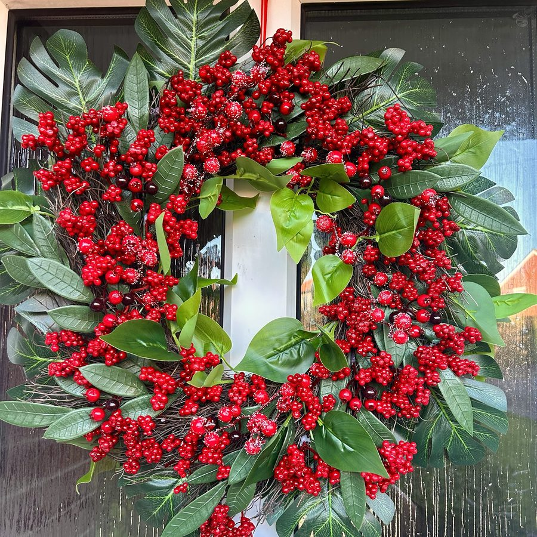
Frosted berries
Red berry wreath
Clusters of red and frosted berries with deep green leaves on a twig base.
Every wreath is unique — a true one of one.
Floral wreaths, table decorations and free-standing pieces, individually crafted for spring, autumn, Halloween and Christmas.
10% of every sale goes to Pretty ’n’ Pink, a breast cancer charity.
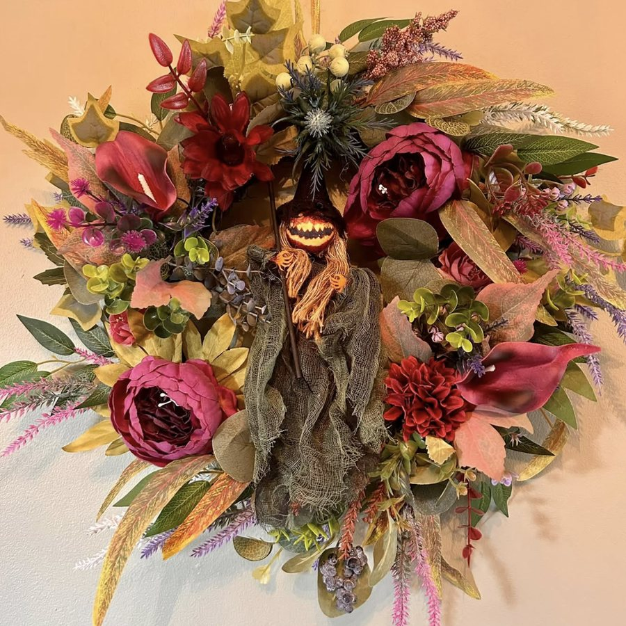
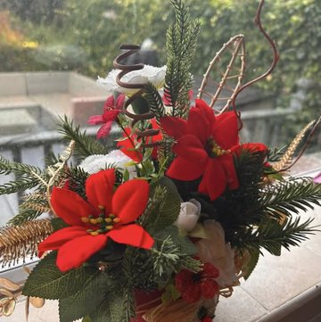
New for ChristmasJust in
This year's individually crafted Christmas wreaths and free-standing decorations. Each one is unique, and some are made with repurposed pieces.

Clusters of red and frosted berries with deep green leaves on a twig base.
Pine with red roses, poinsettias, pine cones, cinnamon and white berries, lit with warm fairy lights.
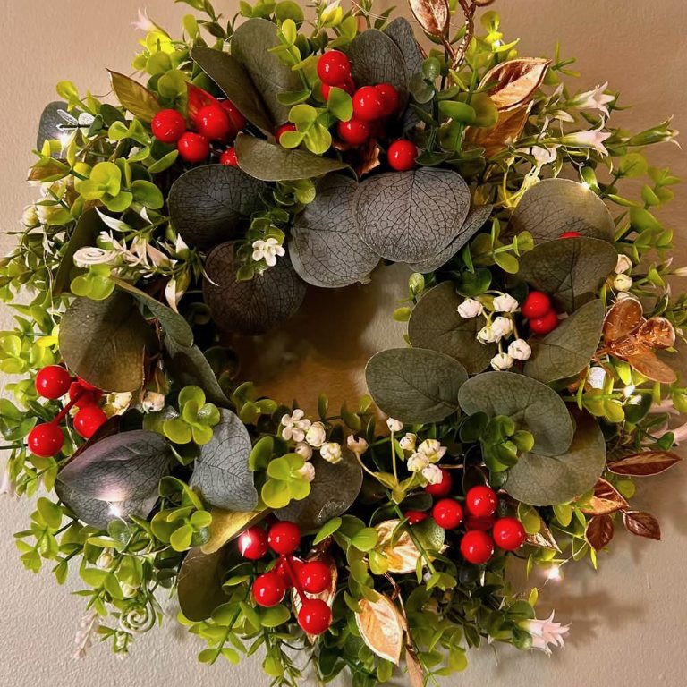
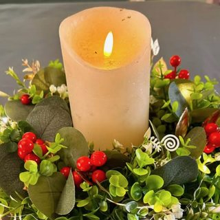
As a centrepieceEucalyptus, red berries, gold leaves and small white flowers, fully lit. Hang it up, or lay it round a candle as a centrepiece. Just over 40 cm (16 in) across.
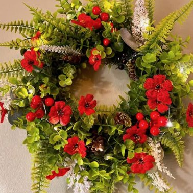
Ferns, red flowers, berries and pine cones, fully lit. Use it as a hanging wreath or a table centrepiece. Just over 40 cm (16 in) across.
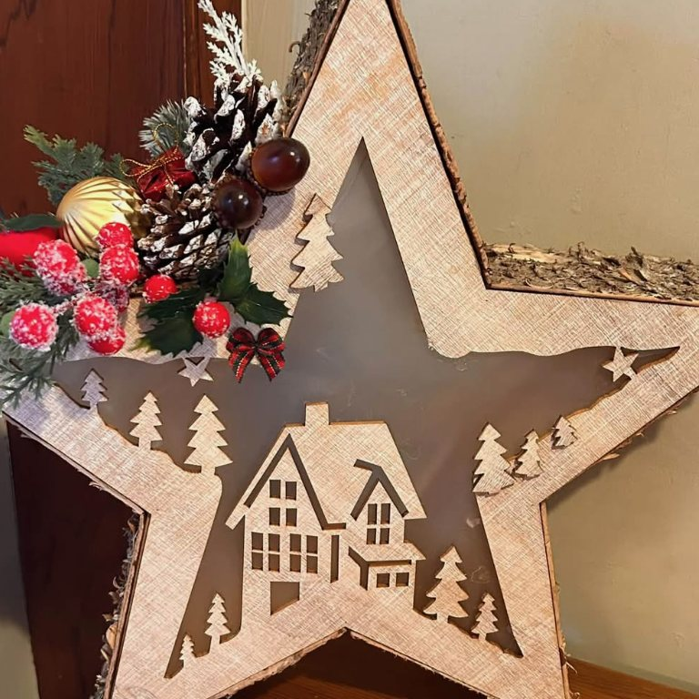
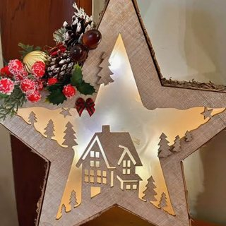
Lit upA reused wooden star with a cut-out village scene, dressed with pine cones, a gold bauble and frosted berries. Lights fitted to brighten any room.
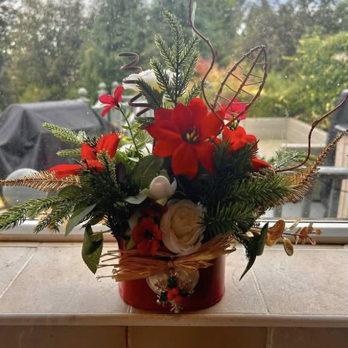
Red poinsettias with pine and white roses, arranged in a repurposed tin.
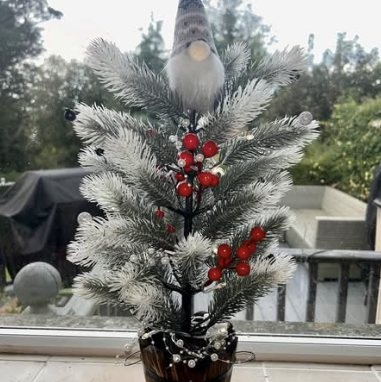
A frosted Christmas tree with a wee Gonk on top and red berries. Fully lit, for indoors or outdoors.
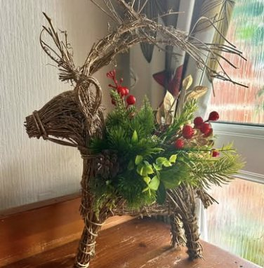
A repurposed reindeer, dressed with greenery and red berries and ready for Christmas.
Gallery
A few of the latest wreaths and table decorations. There are more on the Facebook page.
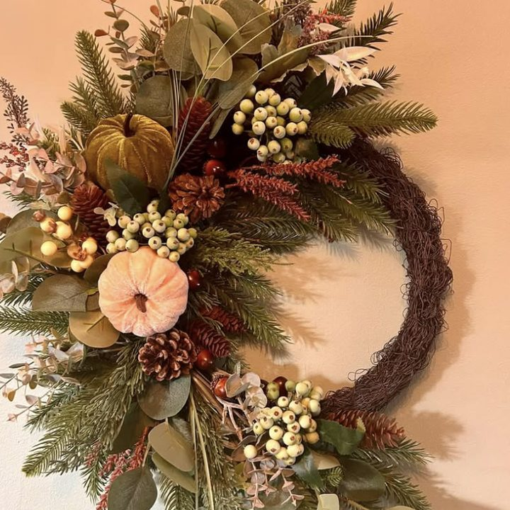
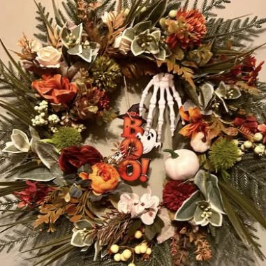
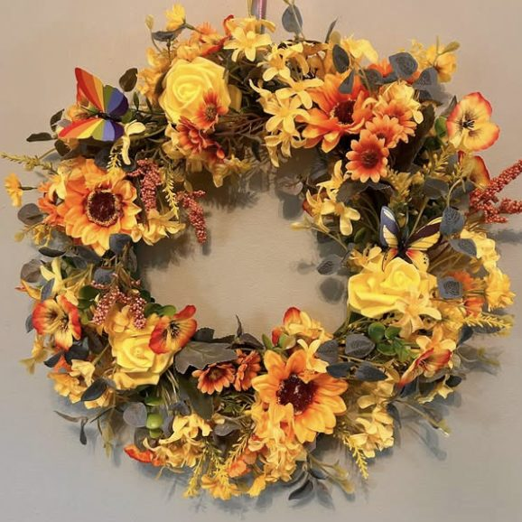
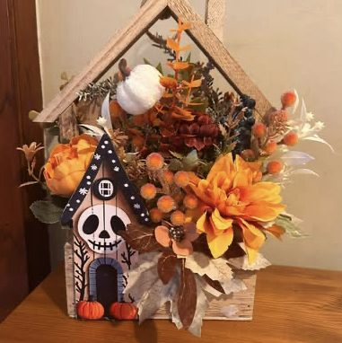
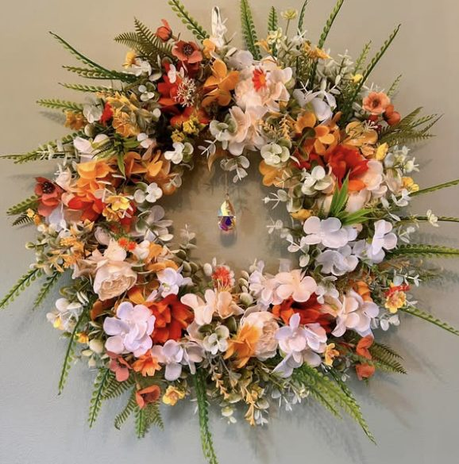
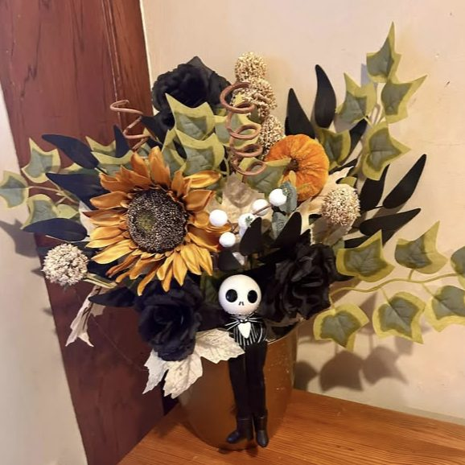
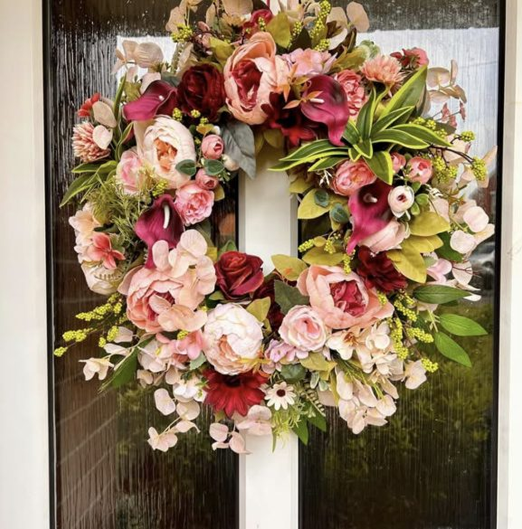
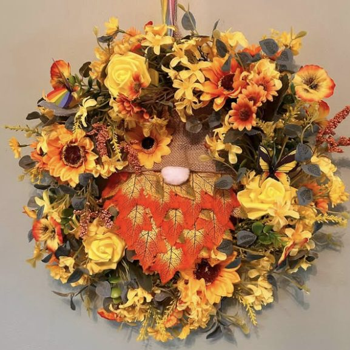
About
Every piece at Wreath Wonders is individually crafted, so no two are the same: each wreath is a true one of one. You'll find door wreaths, table decorations and free-standing arrangements, with designs that follow the seasons.
Recycling is a big part of it too. Some pieces are built around repurposed items, like the tin holding this year's poinsettias or a wee reindeer dressed up for Christmas.
You'll also find Wreath Wonders at fairs. Follow the Facebook page for new makes and fair dates.
Every wreath is unique, individually crafted by hand.
Old tins and decorations given a new life.
Spring florals, autumn colours, Halloween and Christmas.
Get in touch
Send a message through the Facebook page to ask about a wreath or decoration.
Message on Facebook